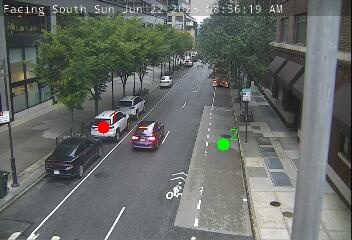
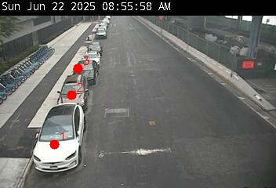

<!DOCTYPE html>
<html>
<head>
    
    <meta http-equiv="content-type" content="text/html; charset=UTF-8" />
    <script src="https://cdn.jsdelivr.net/npm/leaflet@1.9.3/dist/leaflet.js"></script>
    <script src="https://code.jquery.com/jquery-3.7.1.min.js"></script>
    <script src="https://cdn.jsdelivr.net/npm/bootstrap@5.2.2/dist/js/bootstrap.bundle.min.js"></script>
    <script src="https://cdnjs.cloudflare.com/ajax/libs/Leaflet.awesome-markers/2.0.2/leaflet.awesome-markers.js"></script>
    <link rel="stylesheet" href="https://cdn.jsdelivr.net/npm/leaflet@1.9.3/dist/leaflet.css"/>
    <link rel="stylesheet" href="https://cdn.jsdelivr.net/npm/bootstrap@5.2.2/dist/css/bootstrap.min.css"/>
    <link rel="stylesheet" href="https://netdna.bootstrapcdn.com/bootstrap/3.0.0/css/bootstrap-glyphicons.css"/>
    <link rel="stylesheet" href="https://cdn.jsdelivr.net/npm/@fortawesome/fontawesome-free@6.2.0/css/all.min.css"/>
    <link rel="stylesheet" href="https://cdnjs.cloudflare.com/ajax/libs/Leaflet.awesome-markers/2.0.2/leaflet.awesome-markers.css"/>
    <link rel="stylesheet" href="https://cdn.jsdelivr.net/gh/python-visualization/folium/folium/templates/leaflet.awesome.rotate.min.css"/>
    
            <meta name="viewport" content="width=device-width,
                initial-scale=1.0, maximum-scale=1.0, user-scalable=no" />
            <style>
                #map_fe7ab65c51e1965015f49681a5535c71 {
                    position: relative;
                    width: 100.0%;
                    height: 100.0%;
                    left: 0.0%;
                    top: 0.0%;
                }
                .leaflet-container { font-size: 1rem; }
            </style>

            <style>html, body {
                width: 100%;
                height: 100%;
                margin: 0;
                padding: 0;
            }
            </style>

            <style>#map {
                position:absolute;
                top:0;
                bottom:0;
                right:0;
                left:0;
                }
            </style>

            <script>
                L_NO_TOUCH = false;
                L_DISABLE_3D = false;
            </script>

        
</head>
<body>
    
    
            <div class="folium-map" id="map_fe7ab65c51e1965015f49681a5535c71" ></div>
        
</body>
<script>
    
    
            var map_fe7ab65c51e1965015f49681a5535c71 = L.map(
                "map_fe7ab65c51e1965015f49681a5535c71",
                {
                    center: [40.718338666666675, -73.96574266666666],
                    crs: L.CRS.EPSG3857,
                    ...{
  "zoom": 13,
  "zoomControl": true,
  "preferCanvas": false,
}

                }
            );

            

        
    
            var tile_layer_f29fca0d7976687f4dc0bfc0c83b2065 = L.tileLayer(
                "https://{s}.basemaps.cartocdn.com/light_all/{z}/{x}/{y}{r}.png",
                {
  "minZoom": 0,
  "maxZoom": 20,
  "maxNativeZoom": 20,
  "noWrap": false,
  "attribution": "\u0026copy; \u003ca href=\"https://www.openstreetmap.org/copyright\"\u003eOpenStreetMap\u003c/a\u003e contributors \u0026copy; \u003ca href=\"https://carto.com/attributions\"\u003eCARTO\u003c/a\u003e",
  "subdomains": "abcd",
  "detectRetina": false,
  "tms": false,
  "opacity": 1,
}

            );
        
    
            tile_layer_f29fca0d7976687f4dc0bfc0c83b2065.addTo(map_fe7ab65c51e1965015f49681a5535c71);
        
    
            var marker_143d2c6a5cc8893981ac9a3088b08ca3 = L.marker(
                [40.672744, -73.968781],
                {
}
            ).addTo(map_fe7ab65c51e1965015f49681a5535c71);
        
    
            var icon_3ff1745eaba77681a56bda2ef7fe002a = L.AwesomeMarkers.icon(
                {
  "markerColor": "red",
  "iconColor": "white",
  "icon": "camera",
  "prefix": "fa",
  "extraClasses": "fa-rotate-0",
}
            );
        
    
        var popup_480f1d007d9d62694f039d1a3ede80b9 = L.popup({
  "maxWidth": 320,
});

        
            
                var html_6ff1a896c59ab4a67a3aa46d3d7793df = $(`<div id="html_6ff1a896c59ab4a67a3aa46d3d7793df" style="width: 100.0%; height: 100.0%;">     <strong>Grand Army Plaza</strong><br>     0 Open / 3 Spots<br>          </div>`)[0];
                popup_480f1d007d9d62694f039d1a3ede80b9.setContent(html_6ff1a896c59ab4a67a3aa46d3d7793df);
            
        

        marker_143d2c6a5cc8893981ac9a3088b08ca3.bindPopup(popup_480f1d007d9d62694f039d1a3ede80b9)
        ;

        
    
    
                marker_143d2c6a5cc8893981ac9a3088b08ca3.setIcon(icon_3ff1745eaba77681a56bda2ef7fe002a);
            
    
            var marker_75cea62d1ab83b2fc1da153bf0969cfb = L.marker(
                [40.72231, -73.957447],
                {
}
            ).addTo(map_fe7ab65c51e1965015f49681a5535c71);
        
    
            var icon_a8a74191be824b298f13421ec760f8d2 = L.AwesomeMarkers.icon(
                {
  "markerColor": "red",
  "iconColor": "white",
  "icon": "camera",
  "prefix": "fa",
  "extraClasses": "fa-rotate-0",
}
            );
        
    
        var popup_5151bb948dfe848611b66a11b8801156 = L.popup({
  "maxWidth": 320,
});

        
            
                var html_3deb8f1d2ae03e480ed86ff06dee3fda = $(`<div id="html_3deb8f1d2ae03e480ed86ff06dee3fda" style="width: 100.0%; height: 100.0%;">     <strong>Wythe Ave @ North 12 St</strong><br>     0 Open / 4 Spots<br>          </div>`)[0];
                popup_5151bb948dfe848611b66a11b8801156.setContent(html_3deb8f1d2ae03e480ed86ff06dee3fda);
            
        

        marker_75cea62d1ab83b2fc1da153bf0969cfb.bindPopup(popup_5151bb948dfe848611b66a11b8801156)
        ;

        
    
    
                marker_75cea62d1ab83b2fc1da153bf0969cfb.setIcon(icon_a8a74191be824b298f13421ec760f8d2);
            
    
            var marker_72a33ce0694207461efc592b91b399ab = L.marker(
                [40.728739, -74.007137],
                {
}
            ).addTo(map_fe7ab65c51e1965015f49681a5535c71);
        
    
            var icon_323d9af4ed4b2d39b74e9b670a51cfc6 = L.AwesomeMarkers.icon(
                {
  "markerColor": "green",
  "iconColor": "white",
  "icon": "camera",
  "prefix": "fa",
  "extraClasses": "fa-rotate-0",
}
            );
        
    
        var popup_fb8c1d9f4c4e6fd0b405ed992aa01ce4 = L.popup({
  "maxWidth": 320,
});

        
            
                var html_b8cb908a1312d5307654cb036db37d3f = $(`<div id="html_b8cb908a1312d5307654cb036db37d3f" style="width: 100.0%; height: 100.0%;">     <strong>West Houston @ Hudson St</strong><br>     1 Open / 2 Spots<br>          </div>`)[0];
                popup_fb8c1d9f4c4e6fd0b405ed992aa01ce4.setContent(html_b8cb908a1312d5307654cb036db37d3f);
            
        

        marker_72a33ce0694207461efc592b91b399ab.bindPopup(popup_fb8c1d9f4c4e6fd0b405ed992aa01ce4)
        ;

        
    
    
                marker_72a33ce0694207461efc592b91b399ab.setIcon(icon_323d9af4ed4b2d39b74e9b670a51cfc6);
            
    
            var marker_e7780eed2bd98c2dcd958bbae95bd86d = L.marker(
                [40.709853, -73.991746],
                {
}
            ).addTo(map_fe7ab65c51e1965015f49681a5535c71);
        
    
            var icon_77c33ddc76241c25fa571c7b32cd927d = L.AwesomeMarkers.icon(
                {
  "markerColor": "red",
  "iconColor": "white",
  "icon": "camera",
  "prefix": "fa",
  "extraClasses": "fa-rotate-0",
}
            );
        
    
        var popup_c71a54fc1e5e1f51e012be66f0ce3339 = L.popup({
  "maxWidth": 320,
});

        
            
                var html_69f66fd16c075cda7c85aefd6959eaba = $(`<div id="html_69f66fd16c075cda7c85aefd6959eaba" style="width: 100.0%; height: 100.0%;">     <strong>South Street @ Pike Street</strong><br>     0 Open / 3 Spots<br>          </div>`)[0];
                popup_c71a54fc1e5e1f51e012be66f0ce3339.setContent(html_69f66fd16c075cda7c85aefd6959eaba);
            
        

        marker_e7780eed2bd98c2dcd958bbae95bd86d.bindPopup(popup_c71a54fc1e5e1f51e012be66f0ce3339)
        ;

        
    
    
                marker_e7780eed2bd98c2dcd958bbae95bd86d.setIcon(icon_77c33ddc76241c25fa571c7b32cd927d);
            
    
            var marker_c70da0d940d34f3e36d4cf67dac2b471 = L.marker(
                [40.690593, -73.918328],
                {
}
            ).addTo(map_fe7ab65c51e1965015f49681a5535c71);
        
    
            var icon_e67962a847140fb3ec31a2817cfcb12f = L.AwesomeMarkers.icon(
                {
  "markerColor": "red",
  "iconColor": "white",
  "icon": "camera",
  "prefix": "fa",
  "extraClasses": "fa-rotate-0",
}
            );
        
    
        var popup_3765628f091f14dc37f65698bc2aa088 = L.popup({
  "maxWidth": 320,
});

        
            
                var html_7822df18d5a246a5a410e79c9d12f71c = $(`<div id="html_7822df18d5a246a5a410e79c9d12f71c" style="width: 100.0%; height: 100.0%;">     <strong>Bushwick Ave @ Gates Ave</strong><br>     0 Open / 1 Spots<br>          </div>`)[0];
                popup_3765628f091f14dc37f65698bc2aa088.setContent(html_7822df18d5a246a5a410e79c9d12f71c);
            
        

        marker_c70da0d940d34f3e36d4cf67dac2b471.bindPopup(popup_3765628f091f14dc37f65698bc2aa088)
        ;

        
    
    
                marker_c70da0d940d34f3e36d4cf67dac2b471.setIcon(icon_e67962a847140fb3ec31a2817cfcb12f);
            
    
            var marker_6b87f4918c4e9700e5e36ab302f34bdb = L.marker(
                [40.785793, -73.951017],
                {
}
            ).addTo(map_fe7ab65c51e1965015f49681a5535c71);
        
    
            var icon_19ed78ca33631e1f49f862c596eb683c = L.AwesomeMarkers.icon(
                {
  "markerColor": "green",
  "iconColor": "white",
  "icon": "camera",
  "prefix": "fa",
  "extraClasses": "fa-rotate-0",
}
            );
        
    
        var popup_39fa199dd398a4ae75d10af36a937d1a = L.popup({
  "maxWidth": 320,
});

        
            
                var html_519b14a6c0ee8cc61ebba7c765e60272 = $(`<div id="html_519b14a6c0ee8cc61ebba7c765e60272" style="width: 100.0%; height: 100.0%;">     <strong>Lexington Ave @ 96 St</strong><br>     2 Open / 3 Spots<br>          </div>`)[0];
                popup_39fa199dd398a4ae75d10af36a937d1a.setContent(html_519b14a6c0ee8cc61ebba7c765e60272);
            
        

        marker_6b87f4918c4e9700e5e36ab302f34bdb.bindPopup(popup_39fa199dd398a4ae75d10af36a937d1a)
        ;

        
    
    
                marker_6b87f4918c4e9700e5e36ab302f34bdb.setIcon(icon_19ed78ca33631e1f49f862c596eb683c);
            
</script>
</html>